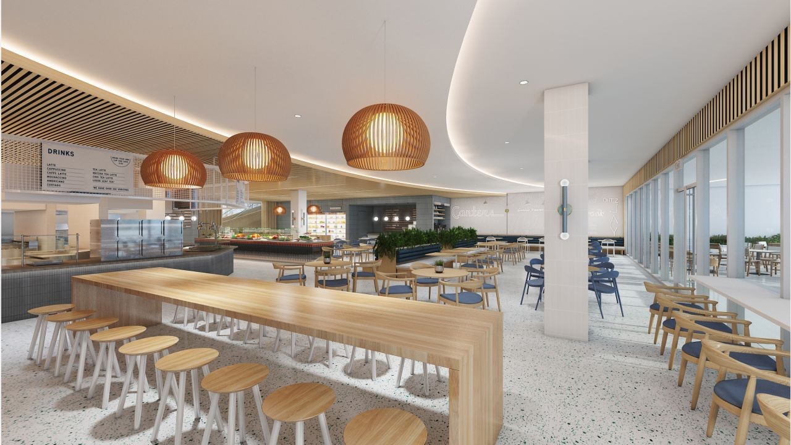
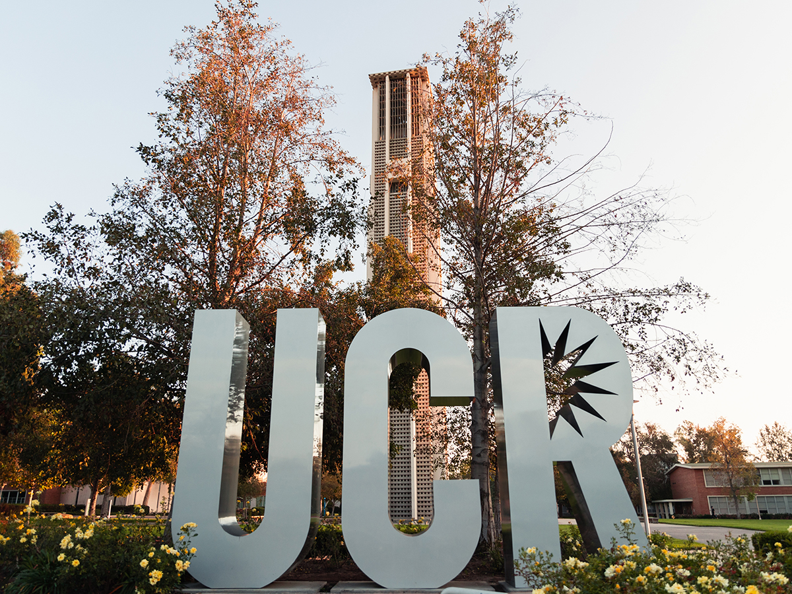
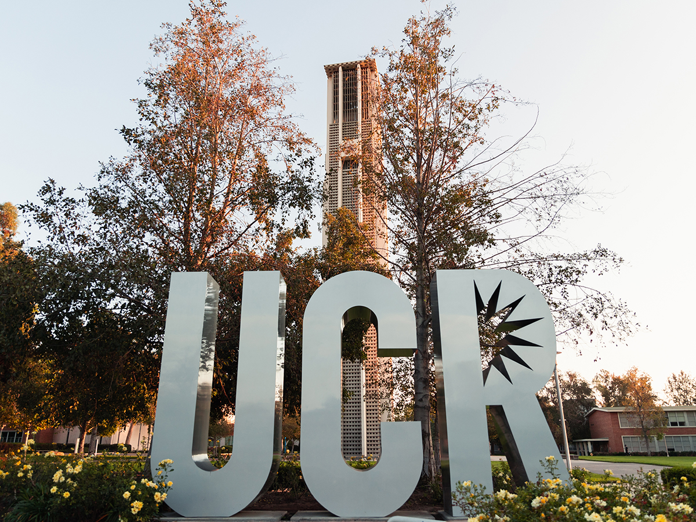

Edgar Michel
Hi, my name is Edgar Michel and I am a nutritionist. I work with athletes on their nutrition so they can perform at the highest level. People assume that the athletes are the best because they work out or practice all day at the gym but never think about the food they eat. Athletes must eat a certain amount of protein, carbohydrates, fibers, fats, vitamins, and minerals to perform. When they go to the gym or practice their body gets beaten and need a form of recovery and their nutrition allows them to recover. Before I worked with athletes I worked with people attempting to lose weight. I managed around 20 people every year and gave each of them a meal plan so they could lose weight. For them, it was all about a small calorie deficit throughout their whole journey. It took some time it is better to lose it slower than fast so that it stays away and everyone still ate their favorite foods but just in a lower calorie way. I went to the University of California Riverside for 4 years and got my bachelor's degree.
I was born in San Diego and lived there for around 8 years then moved over to hemet and thats where I live till this day. I got 2 sisters and a brother who are all older except one sister. My hobbies are the gym and playing video games. I really got into the gym almost a year ago which changed my life completely for the better. I felt better and healthier which also meant being happier and more accomplished. I also have the bonus of being stronger than what most people are. So if anyone wants to arm wrestle then I would always go and try. I also got into video games early since I was a little kid. I was always a playstation guy and also got into the pc verse. I built my own pc which was way easier and funner than going and buying a pre built. At the time I was still in High School with no job so I saved up money and got the budget of around 900 which was enough to build a mid range pc at the time.
Experience
Public Health Nutrionist
• Managed a total of 80 people through 5 years
• Provided clients with meal plans and workouts
• Helped clients loose an average of 35 pounds
Sports Nutrionist
• Provided meal plans for all atheltes
• Part of the recovery team
• Helped chefs on what meals to cook for the cafeteria
Education
UC Riverside
University of California Riverside
Portfolio




